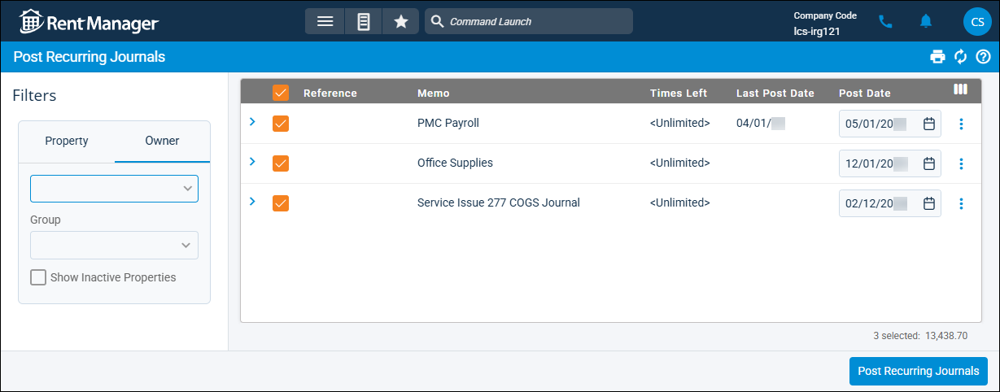

Source: https://rmxhelp.rentmanager.com/Topics/Express/Other/Journals-Recurring-Post.htm
Post Recurring Journals
Recurring journals are journal entries that are used on a recurring basis (daily, weekly, or monthly) to perform money transfers between general ledger (GL) accounts. The Post Recurring Journals page allows you to create one-time journal entries from your recurring journal templates.
More Information
If Task Automation is enabled in Rent Manager Online (RMO) for recurring journals, you do not have to manually post the recurring journals that have been automated.
Related Privileges
| Group | Privilege | Column |
|---|---|---|
| Accounting | Post recurring journals | Enabled |
For more information, refer to Control User Access.
Step 1: Filter Recurring Journals
To post recurring journals, do the following:
-
Go to
 arrow_forward Accounting arrow_forward Journals arrow_forward Post Recurring Journals.
arrow_forward Accounting arrow_forward Journals arrow_forward Post Recurring Journals.
-
In the Filters section, select the properties or owners to display recurring journals that affect those properties or owners. Alternatively, select an owner or property Group from the drop-down list.
Step 2: Post Recurring Journals
After filtering the recurring journals, you are ready to finish posting. To post the recurring journals, do the following:
-
Check the row for each recurring journal that you wish to post. Alternatively, if you would like to select all the displayed recurring journals, check the box in the column header.
-
Review the information about the postings in the columns. By default, some columns display only if added via
 .
.Default Columns Description Reference
A short note to identify the purpose of the journal entry.
Memo
A longer note to provide further information about the purpose of the journal entry transaction (e.g., Security Deposit Transfer).
Times Left
How many more times this recurring journal is set to be posted.
Last Post Date
The date the recurring journal was last posted.
Post Date
The date the recurring journal is posted.
Property Short Names
The abbreviated name of the property impacted by this recurring journal entry.
Amount
The total dollar amount debited and credited in the journal entry.
Available Columns Description GL Account Number List
The general ledger (GL) account number(s) impacted by this recurring journal entry.
Properties
The name of each property impacted by the journal entry.
Units
If applicable, the specific unit affected by the recurring journal.
-
Click Post Recurring Journals.
The Post Recurring Journals pop-up displays. -
Click Yes.
Rent Manager creates a new one-time journal entry for the selected recurring journals.